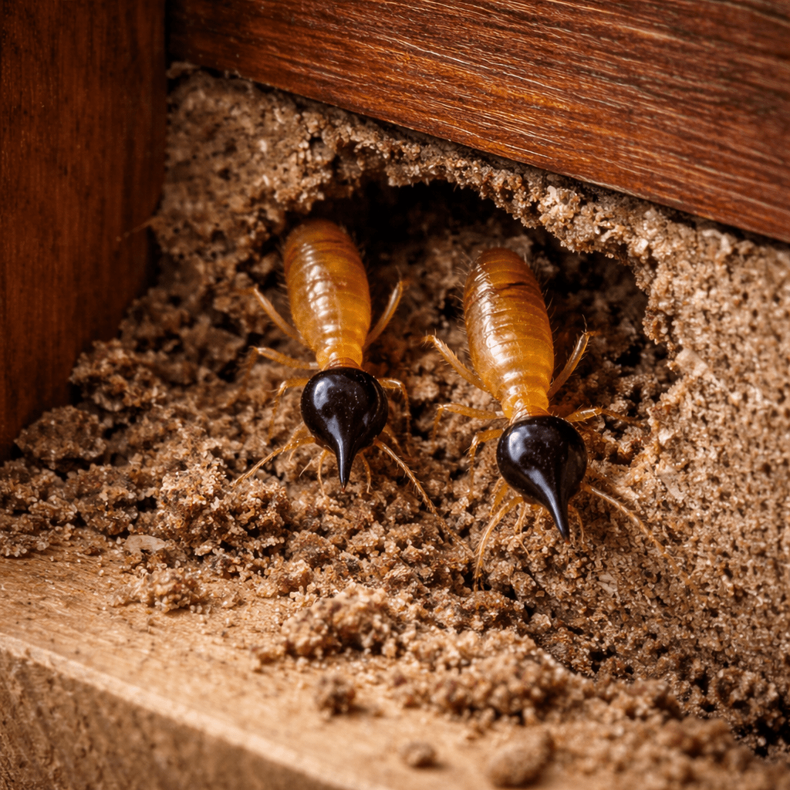

Home ›
Pests ›
Arboreal Termite
Arboreal Termite

Description
The arboreal termite is a type of termite commonly associated with trees, logs, and outdoor areas. It may build visible nests, like a ball or carton-like mass, on trees, posts, or nearby structures, and from there move toward available wood.
Why is it important?
- It can form large colonies and remain active for much of the year.
- Under favorable conditions, it may move toward structures in search of wood and shelter.
- Damage can progress unnoticed at first because wood is often affected internally.
Common signs
- Visible nests on trees, posts, eaves, or protected areas.
- Activity near damp or exposed wood.
- Carton-like material or galleries/tunnels in wooden areas.
- The presence of swarmers (winged termites) during certain seasons.
Damage and risks
- Weakening of wood in outdoor areas such as fascia boards, frames, sheds, and eaves.
- Risk of spread when moisture, cracks, or accessible wood are present.
- Possible damage to indoor wood components if a route of access is found.
Prevention
- Reduce moisture around wooden areas through drainage, sealing, and ventilation.
- Avoid direct wood-to-soil contact.
- Trim branches touching roofs or walls, which can serve as bridges.
- Inspect nearby trees for nests or termite activity.
Professional control
Effective control requires a targeted inspection to identify active areas, evaluate risks to the structure, and apply a safe and effective management plan. At Bugs Or Us PR, we work responsibly and follow good practices, always prioritizing the safety of your family, pets, and the environment.
Service in: Bayamón, Corozal, Dorado, Manatí, Morovis, Naranjito, Toa Alta, Toa Baja, Vega Alta, and Vega Baja.
Related pests
Request Professional Service
← Back to Home